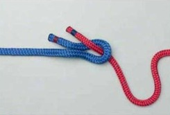

Simpul anyam. Gunanya untuk menyambung 2 tali yang tidak sama besarnya dan dalam keadaan kering.
Untuk membuat simpul anyam atau sheet bend tidaklah sulit. Caranya adalah:
- Buatlah sosok pada ujung utas tali yang berukuran lebih besar (dalam gambar, tali berwarna biru)

- Masukkan ujung tali yang lebih kecil (merah) ke dalam sosok tali besar (biru) dari arah bawah
- Belitkan ujung tali kecil (merah) di bawah tali biru
- Sisipkan ujung tali merah ke bawah badan tali itu sendiri (gambar 3)